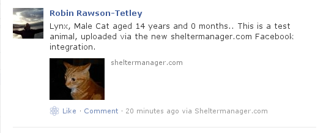
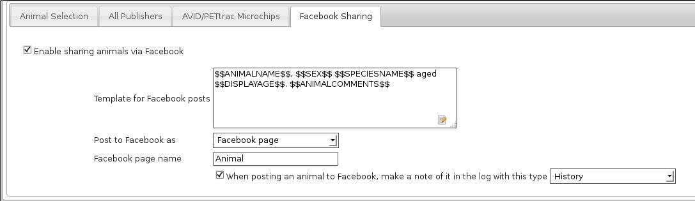

16 Internet Publishing
The system can generate websites for you, showing the animals currently up for adoption. The sites produced can be completely customised and branded to suit you.
In addition, the site includes a generated index, which allows visitors to search the animals available.
The sites produced are pure HTML with optional Javascript and will work perfectly well in hosted, free webspace, allowing you to publish your available animals over the worldwide web for no cost whatsoever. The sites require no server side extensions, such as PHP, Servlets, ASP etc.
To generate your web site, use the Publishing top level menu.
There are many options you can set to choose what appears on the output, and how the output is generated. Set these options under Publishing->Set Publishing Options
-
Include cruelty case animals: Ticking this box will include cruelty case animals on the list. By default, they are not included.
-
Include reserved animals: By default, the system does not include animals if they are currently reserved by someone. Tick this box to include reserved animals in the available list.
-
Include fostered animals: By default, the system does not include animals if they are currently fostered by someone. Tick this box to include fostered animals in the available list.
-
Include animals who don't have a picture: Ticking this box will include animals that don't have photo media. Animals with no photo will look for a special picture “nopic.jpg”. You can upload a placeholder picture with that name to your webspace for animals with no picture.
-
Exclude animals aged under: This box is to prevent puppies and kittens who are too young being included in the list of available adoptions. You may choose an age limit on animals that appear. By default, the system excludes animals less than 1 year old (52 weeks).
-
Include animals in the following locations: Select the locations to include adoptable animals from. If none are selected, all locations will be used.
-
Animals per page: Here, you may select how many animals you would like shown on a page on the site before the system should generate a new one. By default, the system shows 20, however the more animals you put on a page, the longer the page takes to load.
-
Upload all available images: Ticking this box will have the publisher upload all the images for each animal where available. They will be named sheltercode-X.jpg (X increments for each image). The first image will be the image flagged as web preferred.
-
Reupload animal images every time: Ticking this box will tell the publisher to reupload images for all the animals published. Normally, ASM will not upload an image it has previously uploaded to save bandwidth. If you've changed the web preferred image for an animal after a publish, you'll need to set this option to make sure the updated image is sent.
-
Enable FTP uploading: Ticking this box will cause the publisher to upload your site directly to the internet as it is building it. For this to work, the system needs to know the FTP settings issued to you by your ISP (see next section). You must also be connected and online.
-
Generate javascript database: The site search facilities require a Javascript database, indexing the available animal records. If you wish to include search facilities, make sure this box is ticked.
-
Generate thumbnail images: The publisher will create thumbnails of all the animal images. Thumbnail images are 70 pixels along the longest side and have the same name as the animal image, but are prefixed with tn_. You can use tn_$$WebMediaFilename$$ in a template to get the thumbnail image for the current animal.
-
Scale published images to: Modern digital cameras can take very high quality images - so much so that they could take a very long time for users to download (particularly for people with modems). Also, if your shelter's connection to the internet is over a modem, it could take a long time for the site to upload. This box allows you to reduce the size of your images to scaled JPEGs with the resolutions specified. ASM scales down pictures when you attach them under the media tab, so unless you want to make them smaller still, it's best to leave this at No Scaling.
-
Publishing template: ASM can support multiple templates when publishing. It will discover which templates are available and list them here for you to choose. You can create your own by copying an existing one in the media /internet folder and modifying it.
16.1 FTP Settings
To take advantage of the automatic uploading facilities, you will need to know your FTP settings. These are issued to you by your ISP when you get an account with them. The most important thing is the FTP Hostname - this is an address that uniquely identifies the FTP server on the internet. Typically, it starts with ftp. - eg: ftp.btinternet.com. However, this is only convention, and they can be called anything. If you cannot get hold of this, you may also use the FTP server's IP Address (if you know it).
You will need a user name and password for your FTP account (typically the same as your logon to your ISP to get onto the internet through dial up networking if you are a modem user).
Animal Shelter Manager also lets you choose the FTP port (a virtual socket number for communication), however, it is extremely rare that an FTP server runs on anything but port 21 - certainly for ISPs hosting space, so you are safe generally to leave this value at 21.
The final item is the webspace root. If you have not uploaded any kind of site previously, simply leave this blank. This field can contain a relative path to a directory on the remote FTP server where you would like to put your site. Useful if you do not want your site uploaded to the root of your FTP space.
For more information about FTP contact your ISP or system administrator.
16.2 Internet Templates
ASM comes with a number of internet templates – plain, rss, littlebox and sm.com.
plain produces very simple HTML output - just the animal's picture and a few details in a list.
rss produces XML output for interpreting by an RSS feed reader.
sm.com is much more advanced, using CSS hover elements and javascript to do image substitution for icons and other tricks.
littlebox is also more advanced, using CSS overlays and popups.
You can edit these templates under Publishing->Edit HTML Publishing Templates and add your own new ones if desired. Templates are made up of three sections.
-
The header block - this is output for each page before any animal records.
-
The footer block - this is output for each page after all the animal records.
-
The body block - this is output for each animal record and has keys to pull bits of data from the database and the animal's image(s). The keys available are those available for animal documents (see wordkeys in the appendix at the end of this document) and are enclosed in $$ - eg: $$ShelterCode$$ will output the animal's shelter code.
A number of special keys are allowed in the header and footer blocks that pull information from other areas of the system. These are:
-
$$ORGNAME$$ - Becomes your organisation's name
-
$$ORGADDRESS$$ - Your organisation's address
-
$$ORGTEL$$ - Your organisation's telephone number (all of these org fields can be found under System->Options)
-
$$ORGEMAIL$$ - Your email address (this is taken from Settings->Options->Email)
-
$$USER$$ - Substitutes the current system user, including their real name
-
$$DATE$$ - The current date
-
$$TIME$$ - The current time
-
$$DATETIME$$ - The current date and time
-
$$VERSION$$ - The ASM version
-
$$NAV$$ - The page navigation bar generated by the publisher
-
$$TOTAL$$ - The number of animals output by the publisher
16.3 PetFinder.com
In addition to creating standalone websites with animals up for adoption, ASM can also integrate with PetFinder.com and upload your animals for adoption directly to your account with them.
You will need to go to Publishing->Set Publishing Options first and view the PetFinder panel. Here, you should enter the URL to the PetFinder FTP server (ASM defaults members.petfinder.com - as it is at the time of writing), along with the shelter Id given to you by PetFinder.com and your password. All you need to do then is choose Publish to PetFinder.com in place of the normal internet publisher. The options for filtering animals are the same (see previous section for reference).
Note that if you have created new Species or Breeds within ASM, you will need to map them to the available publisher options under the Breed and Species sections of Settings->Lookup Data.
If you have some that are not mapped, the publisher will fail with an error message.
The “Upload all available images” option will upload all animal media images, naming them CODE-X.jpg (starting at 1 for the web preferred media). PetFinder will automatically handle this and display all your images with the animal.
PetFinder has some quirks in that they indicate an unknown crossbreed by having a blank secondary breed with the crossbreed flag set. Since ASM doesn't allow you to set an empty second breed field, there's a workaround. Create a new breed called “Mix”, “Unknown”, “Cross” or “Crossbreed” in your data (any of those names will do). Map it to a PetFinder breed you don't use. If you set this as the secondary breed for crossbreed animals, ASM will send it as a blank to PetFinder.
IMPORTANT: You have to let PetFinder know that you are using ASM to upload your data. Do this by going to the Admin System Help Center, then Contact Us and send PetFinder Tech Support a message that you are using ASM to publish animal data via their FTP server. They should give you the FTP login information and make sure permissions and quotas are correct.
16.4 AdoptAPet.com
ASM can send data to 1-800-Save-A-Pet.com (now known as AdoptAPet.com) and upload your animals for adoption directly to your account with them.
You will need to go to the publishing options first and enter the hostname of the AdoptAPet FTP server (typically autoupload.adoptapet.com), along with the user name given to you by AdoptAPet.com and your password. All you need to do then is choose Publish to AdoptAPet.com. The options for filtering animals are the same (see previous section for reference).
If you have mapped the colours and wish to include them, you will need to tick the “Include colors in column 9” checkbox on the AdoptAPet panel of the publishing options.
You can also have ASM stop sending the import.cfg file after the first export. This means you can then grab it from their FTP server and edit it yourself if you wish to change any mappings, then put it back again.
16.5 Meetapet.com
ASM can send adoptable animal information to www.meetapet.com, an adoption website. After signing up with them, you will need to get an access key, secret and shelter key from them in order to send them data.
16.6 HelpingLostPets.com
ASM can send data to www.helpinglostpets.com, a map-based website that publishes adoptable and found animals. Your ASM found data will also be published as well as adoptable animals. You will need an organisation ID, FTP username and password and to enter the postal/zipcode of your shelter.
Helpinglostpets.com is global and can accept data from shelters in any country.
16.7 RescueGroups.org
ASM can integrate with RescueGroups.org. They run a service at www.petadoptionportal.org that allows updating of multiple online services (including Facebook and Petsmart). See their website for information on which services they update.
You will need to go to the publishing options first and enter the hostname of the RescueGroups.org FTP server (typically ftp.rescuegroups.org), along with the shelter ID and password given to you by RescueGroups.org.
Once you've done that, you can choose the Publish to RescueGroups.org menu item. The options for filtering animals are the same as for the other publishers.
ASM will only include upto 4 images as RescueGroups.org do not support more than this.
Note: The RescueGroups.org publisher uses the publisher breeds and species mappings, so you should make sure that you have mappings for all your breeds and species before using the publisher (the publisher will give an error message if any species or breeds do not have mappings).
16.8 SmartTag PETID
ASM can integrate with SmartTag PETID, a company that supply collar tags to shelters for free in the US. Each tag has a unique number on it and if your locale is set to US and you have SmartTag PETID Settings in your database, you can enter tag information in fields on the animal details screen.
When you publish to SmartTag, ASM finds all animals with a SmartTag that have been adopted and sends their information (along with owner info and a picture) to SmartTag so they can be identified in the event they are lost.
16.9 PetLink
ASM can update PetLink, a company that supply microchips to US shelters.
When you publish to PetLink, ASM finds all animals with a PetLink microchip (their microchips are 15 digits and start with 981) that have been adopted and sends their information and new owner info to PetLink to update their records. If an animal is returned and adopted out again later, ASM will automatically update PetLink as part of the publish.
16.10 AVID/PETtrac
If you are based in the UK and use microchips supplied by AVID for their PETtrac database, you can have ASM submit registrations for you when animals are adopted. You will need to complete your organisation information under the PETtrac/AVID tab on the publishing options screen.
When you use the Move->Adopt an animal workflow, you will be prompted to send updated information to PETTrac. If ASM detects a valid PETtrac microchip (it starts with 977), then a button will appear at the side of the microchip number on the animal's record and it can be updated at any time from there.
16.11 Facebook

Unfortunately, this only works for sheltermanager.com customers as Facebook require a registered application, and applications have to belong to a fixed domain. This is so that other Facebook users can filter your posts by application.
You can publish an animal's photo and adoption details to Facebook by clicking the Facebook button on the main animal details toolbar. The details will be merged with the facebook template configured in publishing options and it will be posted to the timeline of the page you specified in the configuration at Publishing->Set Publishing Options.

The template allows you to specify the text that will be posted to Facebook, using the same wordkeys as the internet publisher.
You can choose to post to Facebook as yourself or as your page. If you choose page, you must complete the page name field.
The Facebook page name field should contain a portion of your Facebook page name as presented to the user (it's the main page title that appears at the top of the page). The reason for this is that Facebook users can administer multiple pages, so ASM needs to be able to find your page in the list available for your Facebook user. It only needs to be a portion of the page name that uniquely identifies it. For example, the ASM Facebook page title is “Animal Shelter Manager”, so we could just put “Animal” in there to identify the page.
If you want to post to the logged in Facebook user's wall, then leave the page name blank.
Finally, if you wish, you can have ASM write a log entry to the animal's record whenever you publish an animal to Facebook.